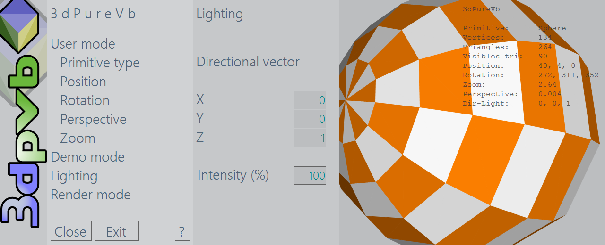
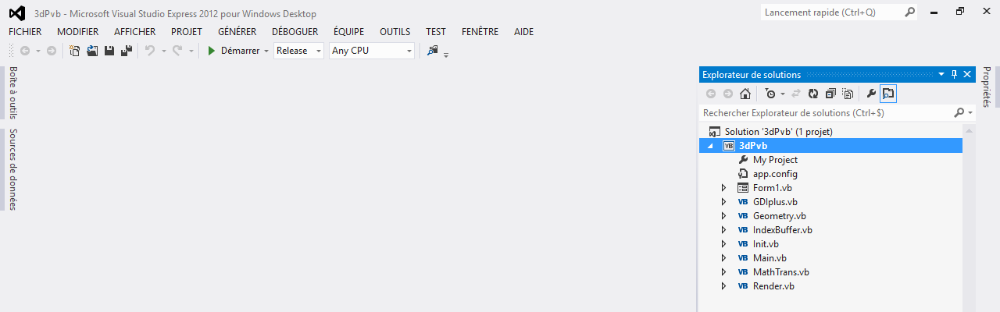
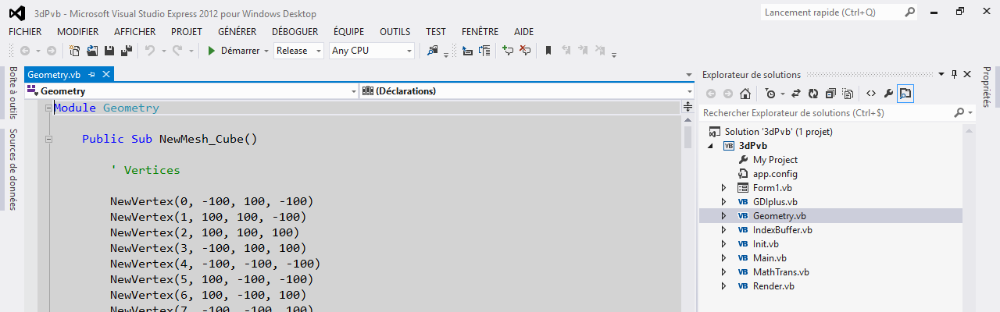
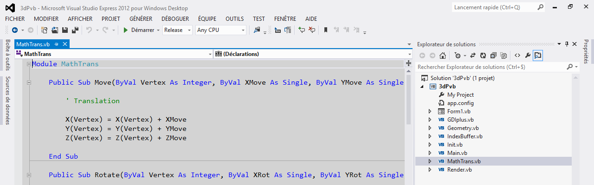
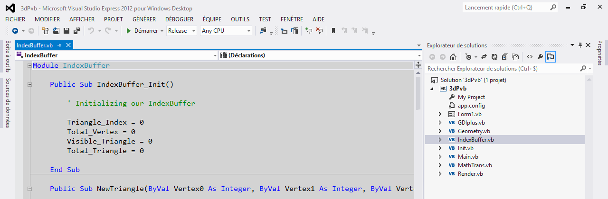
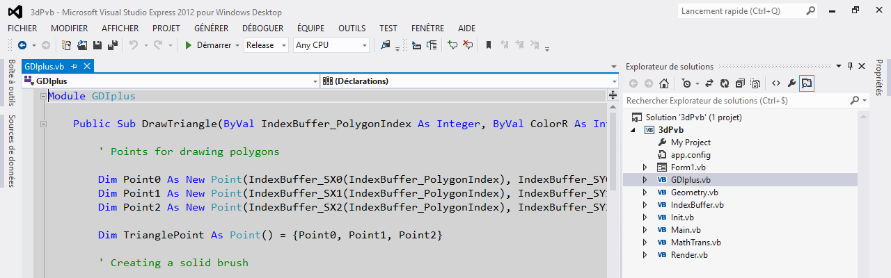

3dPvb (3dPureVb) - A realtime 3d rendering engine written with vb.net
3dPureVb is a small application for learning delivered with its source code.
This project has for objective to introduce you the basis principles of programming a realtime 3d rendering engine and make you understand its core logic. It suggest you to discover:
● Setting up 3d polygonal mesh structures by list of vertex and triangles
● Materials creation with alpha blending support
● Transforming (translation / rotation), render to screen
● Back face culling
● Zoom and perspective modification
● Direct Manipulation with mouse
● Lighting
This project is based on one of my early realtime 3d engine project.

Prerequisites
To open, run and compile the project, you will need Visual Studio version 2012 (or later). The Express and Community editions can be downloaded freely from the official Microsoft website.
Ok, lets start! Programming a realtime 3d rendering engine
Launch Visual Studio and open the project solution (3dPvb.sln). In addition to the WinForm, you will see the project is constitued of 7 modules:
● GDIPlus (for drawing Triangles, based on the GDI+ API)
● Geometry (Containing all procedures for creating primitives geometry)
● IndexBuffer (this will be for storing our vertex, triangles and lighting result)
● Init (declaration of global variables and constants needed by the application)
● Main (as its name suggest, this is the main module containing Initialisations, and main calls routines of the 3d engine)
● MathTrans (mathematical transformations like translation, rotation...)
● Render (final render with Z sorting)
As usual in event-driving programming, the WinForm code, contains the traditionnal Form1_Load() and all necessary procedures for managing the User Interface.

3dPureVb allow you to display and manipulate 3d basis objects. These basis objects are so named Primitives (cube, cylinder, sphere, torus...)
Lets take a look at how we will do it! I advise you to watch and study the source code at the same time, I think this will probably help you understanding the program logic.
Once application has started, it begin by creating a primitive. This is called by the procedure Main3d in the Main Module, and is done in the Geometry module. So we will first define the primitive structure (also named Mesh), by creating a list of vertices (a set of vertex, or corners if you prefer). All of these vertices have a coordinates in space (X,Y,Z).
If you take a look at the procedures in the Geometry module, you will see that each primitive has its own one for its geometry construction. For example, a cube is created by calling the procedure named NewMesh_Cube().

During each vertex creation, we will need to call the Move() and Rotate() procedures in the MathTrans module to update the postion and rotation angle of the primitive just being under construction.

To construct a primitive, its vertices have to be connected to make triangles. Colours of these triangles are setup by Materials, which is a set of definition for the visual appearence of the object when it is rendered to the screen. In 3dPureVb, which is non accelerated and a relative simple 3d engine, materials are just a color definition (Red, Green, Blue and Alpha for the transparency) ..
Note: During the creation process of the triangles, vertices used for this has to be clockwise ! This is very important for managing hidden triangles and back-face culling (removing the triangles who are assumed to be not visible because they are on the back side) . If you dont do this, you will have some strange effects on screen during rendering like triangles showned while they have to be hidden, and so on...
The NewTriangle procedure is very important. This one is called by each primitive creation procedure just after that all vertices are being defined. As indicated by its name, all triangles are created here, and it is also in this procedure that I have included the managing routines for lighting and back-face culling. Then the results are stored in memory thanks to our IndexBuffer , which is a set of variables used to register all necessary datas for sorting and rendering all the computed triangles.

Once all triangles are calculated and stored into the IndexBuffer, we can now proceed to the final rendering (Render module). Triangles datas stored in the IndexBuffer are read then sorted in Z order from the farthest to the nearest (relative to the point of view) to be drawn on screen with the DrawTriangle procedure (GDIPlus module). This rendering method is also called the painter's algorythm.

This small project was written with VbDotNet, but I think with some will and a little bit of work it can easily be re-written with another programming language like C# or Javascript. As explained, the goal is just to make you understand the core logic of a 3d engine.
You have probably understand that the used API for rendering is GDI+. This one will quickly show its limits by rendering more complexe scenes with a big amount of polygons. At this time it will be useful to consider some other solutions, certainly more complex but also more powerful like DirectX , OpenGL or WebGL (if you target web dev with Javascript as exemple) to have the benefit of hardware accelerated power.
Thats it! Now all you have to do is to take your keyboard and start studying the code. I hope my explanations was understandable enought, and that you will enjoy learning with this little project as I enjoyed developping it!
Sylvain SIMON (SylFx)
Date of first publication: Juny 24, 2013 - Latest update: February 21, 2017.
©2013-2017 Sylvain SIMON. www.sylfx.net - www.github.com/sylfx